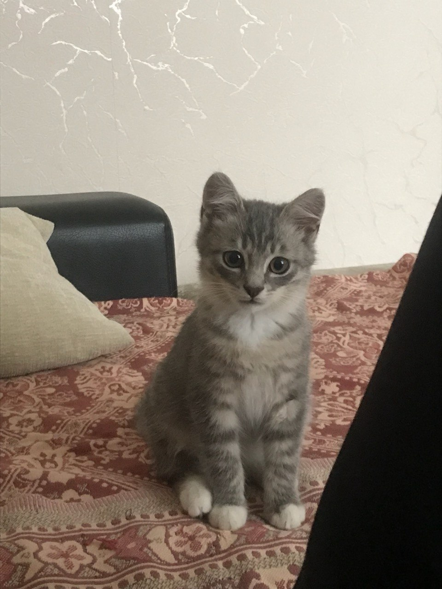
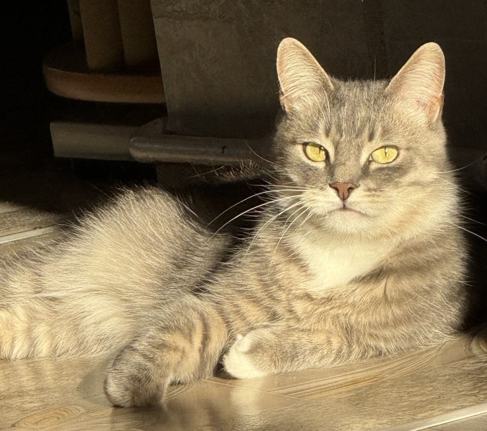
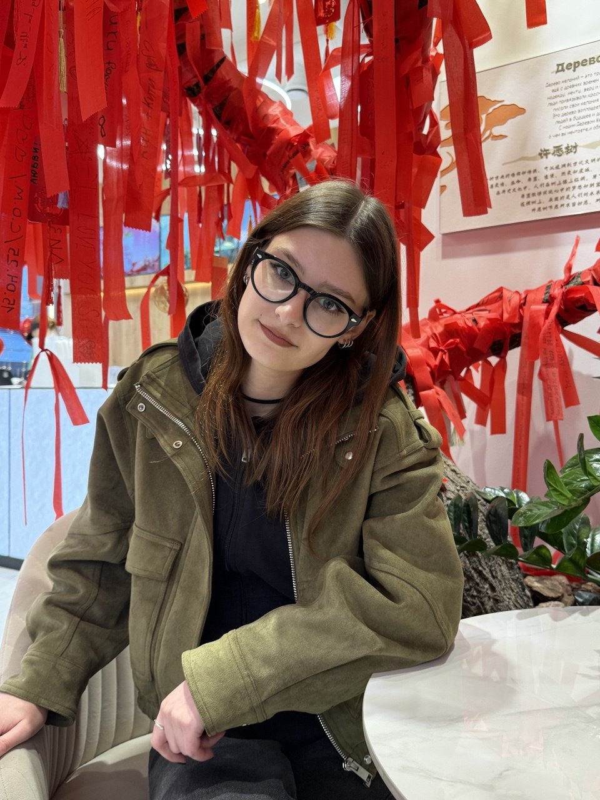
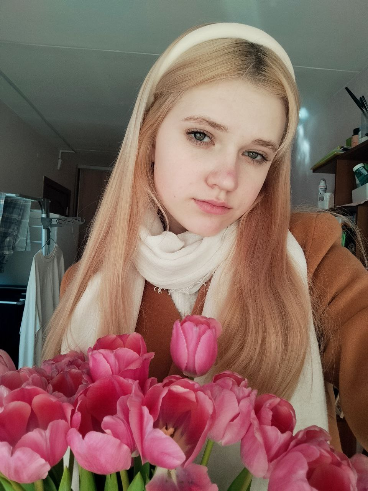
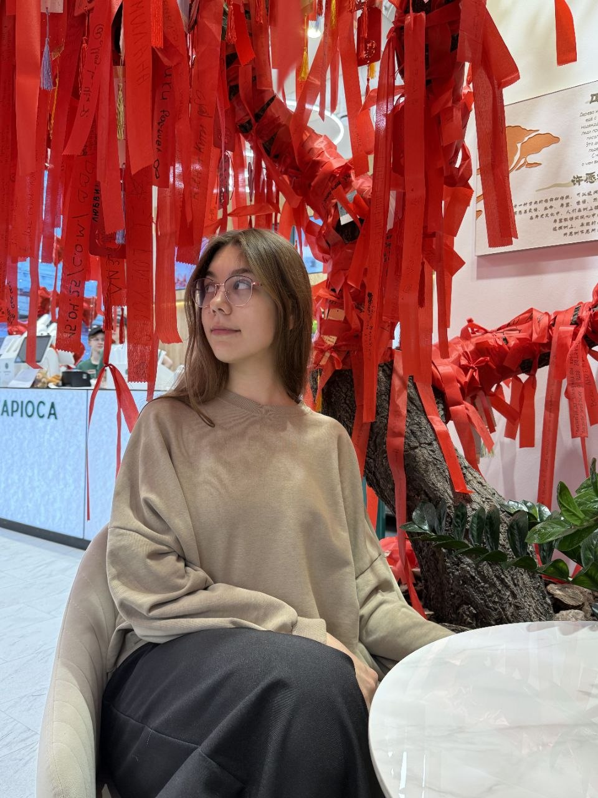

Всё началось с одного летнего солнечного вечера, когда по дороге домой я услышала тихий писк из кустов. Там бегал маленький серый котенок. Он был совсем диким и до смерти боялся людей: стоило мне сделать шаг, как он с шипением исчезал в траве. Несколько вечеров я возвращалась к тому же месту, принося еду и терпеливо дожидаясь, пока он привыкнет к моему голосу и присутствию. Это была настоящая проверка на упорство и веру в то, что доброта побеждает любой страх. Я назвала его Каспер.
Наблюдая за тем, как Каспер растет и набирается сил в безопасности и любви, я отчетливо поняла: спасение даже одной маленькой жизни дает невероятную энергию. Один добрый поступок породил желание совершить еще десятки других. Так, шаг за шагом, из этой случайной встречи под летним солнцем вырос наш приют CASPER — место, где каждый «хвост» теперь точно знает, что его обязательно найдут, согреют и полюбят.

Основатель приюта

Ветеринарный врач
Волонтер-кинолог

Координатор